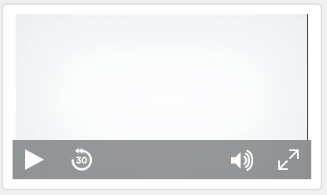
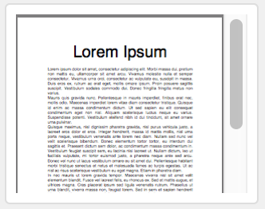
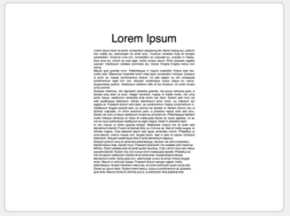
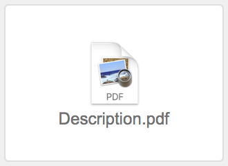
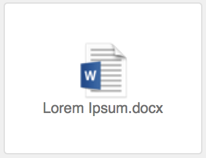

A container field can store pictures, audio and video files, PDFs, or any other type of file that you want to keep in a database. You can add content to a container field by inserting it, dragging it into the field, or pasting the file from the Clipboard.
If a field is an interactive container, you can work with the field's contents interactively. For example, you can play music, play a video, or scroll through a PDF within the field. Whether a field is an interactive container depends on the file type inserted into the field, where the file is stored, and the setting of the Inspector option Optimized for. See Specifying formats for container fields.
1. In Browse mode, click the container field.
2. Choose a command from the Insert menu, choose a storage option for the file, then click Open.
Note If you select Store only a reference to the file, FileMaker Pro Advanced doesn't import the file; it only keeps track of where it is on your hard disk. This option may reduce the size of your FileMaker Pro Advanced file, but if you move or delete the referenced file, the file won't be displayed.
The following table describes how to insert each supported file format into a container field and what the field displays. See About container fields.
To insert this | Do this |
Picture | Choose Insert menu > Picture, then choose the file. The field displays the picture. |
Audio/video | •When the field is optimized for interactivity, choose Insert menu > Audio/Video, then choose the file. The field displays the file's contents in an audio or video player. You can play the file in the field.  •When the field is optimized for images, choose Insert menu > File, then choose the file. The field displays the file icon and filename. |
•When the field is optimized for interactivity, choose Insert menu > PDF, then choose the file. The field displays the file's contents, and you can scroll or page through the document within the field.  Windows: If Insert menu > PDF is dimmed and the field is optimized for interactive content, no web browser plug-in (such as Adobe Reader) is installed on your local computer. Install a web browser plug-in for PDF files, then try inserting the PDF file again. •When the field is optimized for images, choose Insert menu > Picture, then choose the file. The field displays the first page of the file as a picture. •When the field is optimized for images and you choose Insert menu > File and choose the file, the field displays the file icon and filename. | |
Other file types | Choose Insert menu > File, then choose the file. The field displays the file icon and filename.  Note If the field is optimized for images and you inserted the file with the Store only a reference to the file option selected, you can open the file in the associated application by selecting the field and pressing the Space bar, or by double-clicking the field. |
File type | Supported format type |
Picture | Encapsulated Postscript (.eps) GIF (.gif) JPEG/JFIF (.jpg) PDF (.pdf) (macOS) Photoshop (.psd) (macOS) PNG (.png) TIFF (.tif) Windows bitmap (.bmp) Windows Metafile/Enhanced Metafile (.wmf/.emf) (Windows) |
Audio/video | AIFF Audio file (.aif, .aiff) AVI movie (.avi) MP3 Audio File (.mp3) MPEG-4 Audio File (.m4a) MPEG-4 movie (.mp4) MPEG movie (.mpg, .mpeg) MPEG-4 video file (.m4v) QuickTime Movie (.mov, .qt); see note below Sun Audio file (.au) WAVE Audio File (.wav) Windows Media Audio (.wma) Windows Media Videos (.wmv) |
•To delete data from a container field, click the container field, then press Backspace or Delete. To delete data from an interactive container, choose Edit menu > Clear or Cut.
•Some QuickTime Movie (.mov, .qt) formats inserted as audio or video, such as QuickTimeVR, aren't supported.
•To insert package files, such as Keynote files, into a container field, first archive or zip the package files.
•When you drag a file into a container field, the data is embedded in the container field.
•You cannot work interactively with container fields that are in portals. However, you can if the container field is in a popover within a portal.
•If you use the same graphic in more than one place (such as a company logo), insert it in a container field with global storage. Whenever you change the graphic in one place, it is changed everywhere. See Inserting graphics onto a layout.
•If you select Store only a reference to the file, you can see the location of the file on your hard disk by creating a calculation that uses the GetAsText function.
•macOS: Plug-ins stored in container fields are compressed by default.